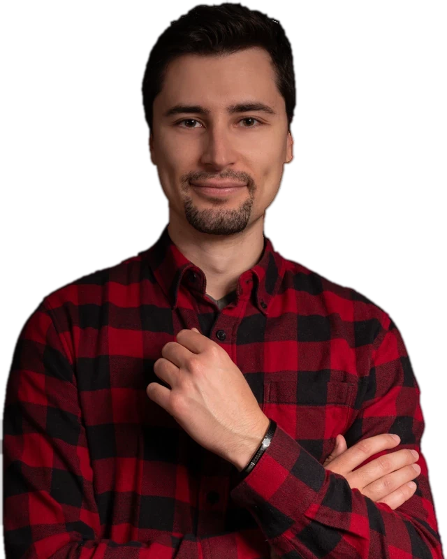

Vous pilotez tout. Vous ne devriez piloter que l'essentiel.
Je clarifie qui fait quoi, j'installe un pilotage simple, et je réduis votre dépendance opérationnelle. Pour que vous travailliez sur votre entreprise, et pas uniquement dedans.
Mesurez la solidité de votre organisation en 5 min : 6 dimensions clés, 17 questions, résultat par email.
« Grâce à lui, nous avons gagné en productivité, en visibilité sur nos projets, et en efficacité globale. »Nicolas, CEO Codaza, client
- salariés pilotés en tant que COO de PME
- 70
- établissements et marques gérés en simultané
- 7
- de chiffre d'affaires sur un secteur de grande distribution
- 11M€
Ça a du sens si...
Ces trois situations reviennent le plus souvent chez les dirigeants avec qui je travaille. Cochez celles qui vous ressemblent.
Trois volets, un seul objectif
Je structure l'entreprise et j'accompagne son dirigeant. Reprendre la main sur votre entreprise : on choisit ensemble ce qui compte le plus pour vous maintenant.
Vision et stratégie
Un état des lieux complet de l'entreprise et de son dirigeant, pour transformer l'analyse en plan d'action. Des lignes stratégiques qui concilient votre vision et un vrai avantage concurrentiel.
Dans la durée : un mentorat exécutif, parfois une place au comité de direction, pour ne plus décider seul.
Gestion humaine
La bonne personne au bon poste, une équipe qui sait où elle va et pourquoi. Un leadership clair, une culture d'amélioration continue, une communication qui circule.
Systèmes et IA
Des outils concrets et un pilotage simple : trésorerie, marges, indicateurs clés. De quoi décider avec des chiffres, pas des impressions.
Un exemple en vidéo : Générer des leads qualifiés avec Claude, en 10 min (+ Notion)
Je structure les entreprises et j'accompagne les dirigeants
Je suis bras droit de CEO et COO externalisé, en freelance. Mon objectif est simple : aider les dirigeants à réussir, sans qu'ils aient à tout porter seuls.
La stratégie ne sert à rien si elle ne se traduit pas en exécution concrète.
Je ne suis pas un généraliste qui touche à tout. Je suis un sparring partner pour les dirigeants, capable de les challenger pour faire avancer les choses.
- Aujourd'hui
- Bras droit de CEO et COO externalisé, en freelance
- PME
- COO, avec jusqu'à 7 établissements et marques gérés en simultané pour 70 salariés
- Grande distribution
- Un secteur de 26 personnes et 11 M€ de chiffre d'affaires
Je documente mon parcours de COO externalisé et augmenté, avec des capacités démultipliées par l'intégration de l'IA. Voir ma chaîne YouTube
Le parcours, du premier échange au suivi long terme
Une intervention initiale de quelques semaines, puis un accompagnement qui peut s'étendre sur plusieurs mois. J'ajuste au fil de l'eau plutôt que de livrer un rapport figé.
Premier contact
On parle de votre situation et de vos objectifs, sans engagement.
Diagnostic
État des lieux de six dimensions : vision, humain, données, gestion des problèmes, process et suivi de l'exécution.
Plan d'action
On priorise et on choisit ensemble l'angle d'intervention le plus utile.
Mise en œuvre
Outils concrets, formation, accompagnement au changement.
Suivi long terme
Jusqu'à 12 mois, parfois une place au comité de direction.
Ce qu'en disent ceux qui ont travaillé avec moi
Axel a été un véritable atout pour Codaza. Il m'a accompagné dans la mise en place d'une stratégie claire et efficiente pour l'entreprise, en allant bien au-delà du simple conseil. Il s'est impliqué concrètement dans le déploiement du plan d'actions, avec un vrai souci du détail et une excellente compréhension des enjeux internes. Grâce à lui, nous avons gagné en productivité, en visibilité sur nos projets, et en efficacité globale. Il agit comme un bras droit, en immersion totale dans l'entreprise, avec une approche à la fois humaine, structurée et impactante.Nicolas
CEO Codaza, client
Axel est un excellent mentor. J'ai pu travailler sous sa direction pendant deux ans et il a été un élément clé dans mon développement professionnel. Grâce à ses conseils, j'ai gagné en organisation et en efficacité, et développé ma vision stratégique grâce à une communication fluide et régulière. Il a instauré de nouvelles procédures pour optimiser nos tâches et notre planification. Il accompagne ses collaborateurs avec transparence, tout en faisant progresser leur autonomie.Killian
Directeur des opérations
Où en est votre organisation ?
17 questions, 5 minutes. Vous recevez par email votre score sur 100, votre profil et la dimension de votre organisation où le score est le plus faible.
Choisissez une tranche pour lire le profil correspondant.
L'entreprise tourne autour de vous
Vous êtes partout parce que vous avez toujours été la solution la plus fiable. Cela a un coût : votre temps, votre énergie, et la capacité de votre entreprise à grandir sans vous.
Dans chaque cas, je vous propose un échange gratuit de 30 minutes. On regarde ce que révèle votre score sur votre organisation, les points de levier prioritaires pour votre situation, et si et comment je peux vous accompagner concrètement.
- Premier contact sans engagement
- 17 questions, résultat par email
- Sans six mois de diagnostic
- Échange de 30 minutes, gratuit
Questions fréquentes
Quel est le prix ?
Sur mesure, selon la taille de votre entreprise et la valeur visée dans la roadmap.
Quelle est la durée de l'accompagnement ?
Elle suit la roadmap et le niveau d'accompagnement que vous souhaitez.
Quel temps de collaboration prévoir ?
Il dépend de l'ampleur du travail.